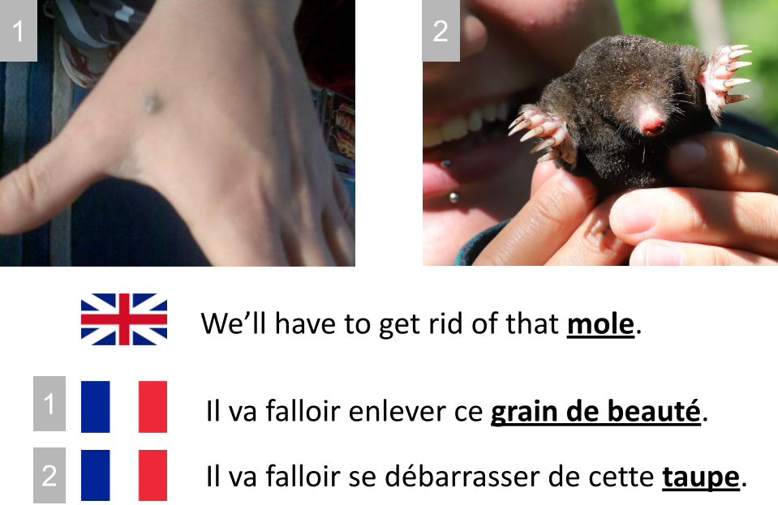
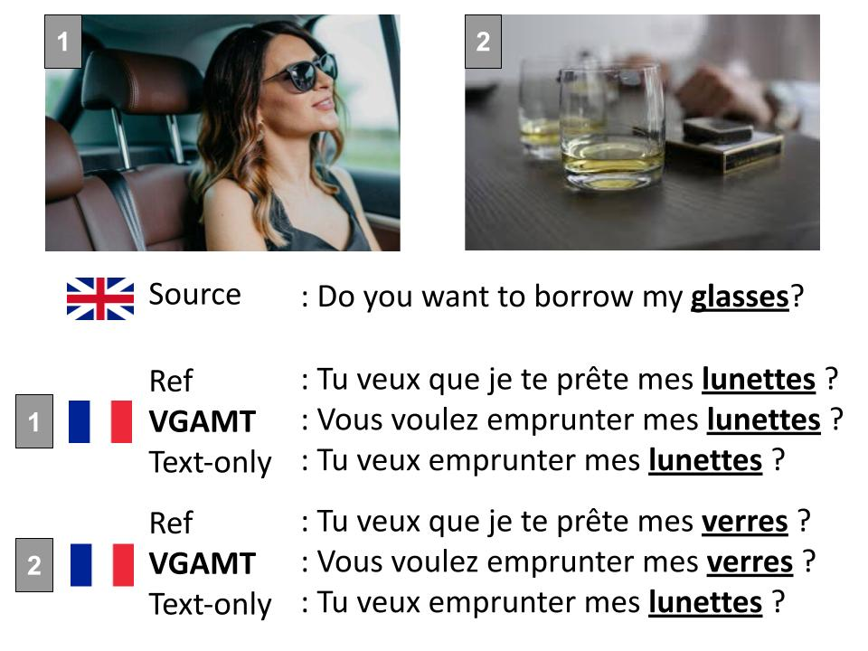

Tackling Ambiguity with Images:
Improved Multimodal Machine Translation and Contrastive Evaluation
Matthieu Futeral1,2, Cordelia Schmid1,2, Ivan Laptev1,2, Benoît Sagot1, Rachel Bawden1
- 1Inria Paris
- 2Département d’informatique de l’ENS, CNRS, PSL Research University
- paper / code / data
Abstract
One of the major challenges of machine translation (MT) is ambiguity, which can in some cases be resolved by accompanying context such as images. However, recent work in multimodal MT (MMT) has shown that obtaining improvements from images is challenging, limited not only by the difficulty of building effective cross-modal representations, but also by the lack of specific evaluation and training data. We present a new MMT approach based on a strong text-only MT model, which uses neural adapters, a novel guided self-attention mechanism and which is jointly trained on both visually-conditioned masking and MMT. We also introduce CoMMuTE, a Contrastive Multilingual Multimodal Translation Evaluation set of ambiguous sentences and their possible translations, accompanied by disambiguating images corresponding to each translation. Our approach obtains competitive results compared to strong text-only models on standard English→French, English→German and English→Czech benchmarks and outperforms baselines and state-of-the-art MMT systems by a large margin on our contrastive test set.
Method: Visually Guided and Adapted Machine Translation system (VGAMT)
1. Exploiting large-scale text-only parallel corpus and English-only captioning data
Multimodal parallel datasets are expensive to obtain as it requires a sentence, its translation and an additional image. MMT models are therefore trained on a few amount of data and performs poorly in comparison to state-of-the-art MT systems trained on large-scale parallel corpus.
Here, we propose to exploit the large amount of existing text-only parallel data by adapting a frozen MT model to multimodal inputs with lightweight modules. In addition to the classic multimodal machine translation (MMT) objective, we also train our model on visually conditioned masked language modeling (VMLM) objective and English captioning data to increase the number of text-image pairs during training.
2. Guided self-attention: effective exploitation of visual features into MT systems.
Contrastive Multilingual Multimodal Translation Evaluation dataset (CoMMuTE)
Traditional MMT benchmarks contain only a handful ambiguous examples where images are necessary to produce accurate translation of the source sentence. To handle this, we introduce CoMMuTE, a contrastive evaluation dataset, composed of ambiguous examples accompanied with images and two translations: a correct one and an incorrect one. The additional image determines which translation is the correct one. Models are asked to rank translations based on the source sentence and the image. On the example on the right, `mole' can either be translated by `grain de beauté' or `taupe' in French depending on the conditional image.

Translation examples

Data
Our contrastive evaluation dataset CoMMuTE is available at this link.
Citation
@article{vgamt,
author = {Futeral, Matthieu and Schmid, Cordelia and Laptev, Ivan and Sagot, Benoît and Bawden, Rachel},
title = {Tackling Ambiguity with Images: Improved Multimodal Machine Translation and Contrastive Evaluation},
journal = {arXiv preprint arXiv:2212.10140},
year = {2022}
}